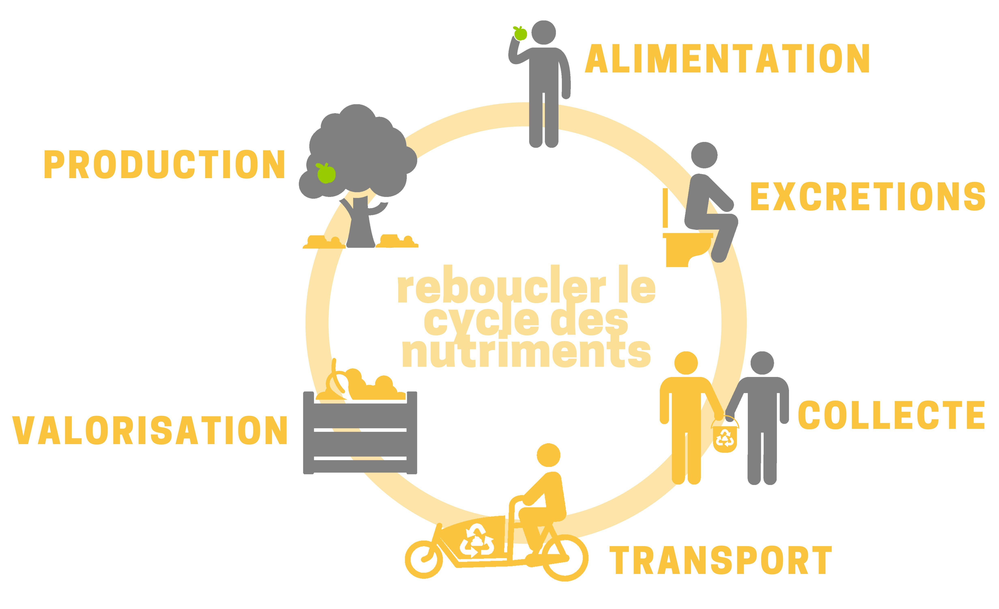

<!-- <div class="parallax"> ajout de la div parallax pour test -->
<div class="body-projet" id="projet">
  <div class="tets">
  <h2>Notre Projet</h2>

  <div class="projet-container">
      
      <p>
        " Aujourd'hui seulement 35% des cours d’eau français sont en bon état chimique. Loin d'être des déchets,
        nos excréments sont en effet un réservoir dans lequel se concentrent les nutriments non assimilés par notre corps.
        Or, une partie de ces nutriments finissent dans nos rivières et participent à leur pollution.
        En parallèle, chaque jour, chacun d'entre nous consomme près de 130 litres d'eau potable dont 20% pour tirer sa chasse d'eau.<br><br>
        Face à ces constats est le né le projet de La Fumainerie :  questionner la faisabilité et l’efficacité d'un système
        d’assainissement collectif et alternatif porté par des citoyens girondins.
        <br><br>Dès mars 2020, nous allons déployer sur la métropole bordelaise, le premier réseau de collecte et de valorisation des
        matières collectées par les toilettes sèches installées dans les appartements des particuliers, dans les entreprises et
        sur les lieux accueillant du public en milieu urbain.<br>
        Pendant deux ans,  nous étudierons l’efficacité d'une collecte
        à domicile et d'une valorisation des "déchets" de toilettes sèches pour préserver notre ressource en eau et soutenir
        notre agriculture."
      </p>
    </div>
  </div>
<!-- </div> -->
